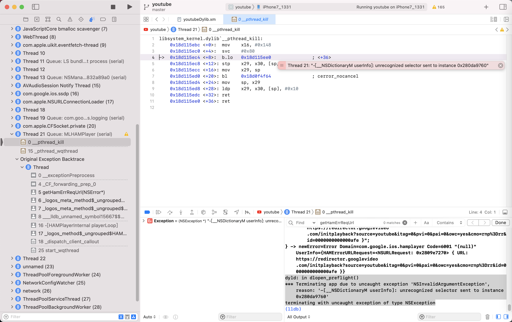

dlopen_preflight
- 所属头文件:
dlfcn.h - 语法定义
bool dlopen_preflight(const char* path);- 详细定义
- Mac中：
usr/include/dlfcn.h#if !defined(_POSIX_C_SOURCE) || defined(_DARWIN_C_SOURCE) extern bool dlopen_preflight(const char* __path) __OSX_AVAILABLE_STARTING(__MAC_10_5, __IPHONE_2_0) __DYLDDL_DRIVERKIT_UNAVAILABLE; #endif /* not POSIX */- 图
- 图
- Mac中：
- 详细定义

man page
DLOPEN_PREFLIGHT(3) BSD Library Functions Manual DLOPEN_PREFLIGHT(3)
NAME
dlopen_preflight -- preflight the load of a dynamic library or bundle
SYNOPSIS
#include <dlfcn.h>
bool
dlopen_preflight(const char* path);
DESCRIPTION
dlopen_preflight() examines the mach-o file specified by path. It checks
if the file and libraries it depends on are all compatible with the cur-rent current
rent process. That is, they contain the correct architecture and are not
otherwise ABI incompatible.
dlopen_preflight() was first available in Mac OS X 10.5.
SEARCHING
dlopen_preflight() uses the same steps as dlopen() to find a compatible
mach-o file.
RETURN VALUES
dlopen_preflight() returns true on if the mach-o file is compatible. If
the file is not compatible, it returns false and sets an error string
that can be examined with dlerror().
SEE ALSO
dlopen(3) dlerror(3)
BSD April 17, 2006 BSD
hook代码
Frida
Interceptor.attach(Module.findExportByName(null, "dlopen_preflight"), {
onEnter: function(args) {
if (args[0].isNull()) return;
var path = args[0].readUtf8String();
if (!iswhite(path)) console.log("dlopen_preflight " + path);
}
})
iOSOpenDev
bool dlopen_preflight(const char* path);
%hookf(bool, dlopen_preflight, const char* path){
bool isPreLoadOk = %orig;
iosLogInfo("path=%{public}s -> isPreLoadOk=%s", path, boolToStr(isPreLoadOk));
return isPreLoadOk;
}
有log，但都是系统库，没有任何越狱库：
默认 15:05:11.453380+0800 Aweme hook_dylib.xm dlopen_preflight: path=/System/Library/Frameworks/CFNetwork.framework/CFNetwork -> isPreLoadOk=True
默认 15:05:19.144160+0800 Aweme hook_dylib.xm dlopen_preflight: path=/System/Library/Frameworks/AudioToolbox.framework/AudioToolbox -> isPreLoadOk=True
默认 15:05:19.415606+0800 Aweme hook_dylib.xm dlopen_preflight: path=/System/Library/Extensions/IOHIDFamily.kext/PlugIns/IOHIDLib.plugin/IOHIDLib -> isPreLoadOk=True
C
Swizzler/C_function_hooks_section3.xm at master · vtky/Swizzler (github.com)
/*
dlopen_preflight
dlopen_preflight() examines the mach-o file specified by path. It checks
if the file and libraries it depends on are all compatible with the current
process. That is, they contain the correct architecture and are not
otherwise ABI incompatible.
bool dlopen_preflight(const char* path);
*/
bool (*orig_dlopen_preflight) (const char* path);
bool replaced_dlopen_preflight (const char* path)
{
DDLogVerbose(@"dlopen_preflight: %s", path);
if (disableJBDectection())
{
return 0;
}
bool ret = orig_dlopen_preflight(path);
return ret;
}
...
void C_function_hooks_section3()
{
...
// dl
InstallHook(dlopen_preflight);
...
涉及到的地方
YouTube
dyld: in dlopen_preflight()
*** Terminating app due to uncaught exception 'NSInvalidArgumentException', reason: '-[__NSDictionaryM userInfo]: unrecognized selector sent to instance 0x280da9760'
terminating with uncaught exception of type NSException
